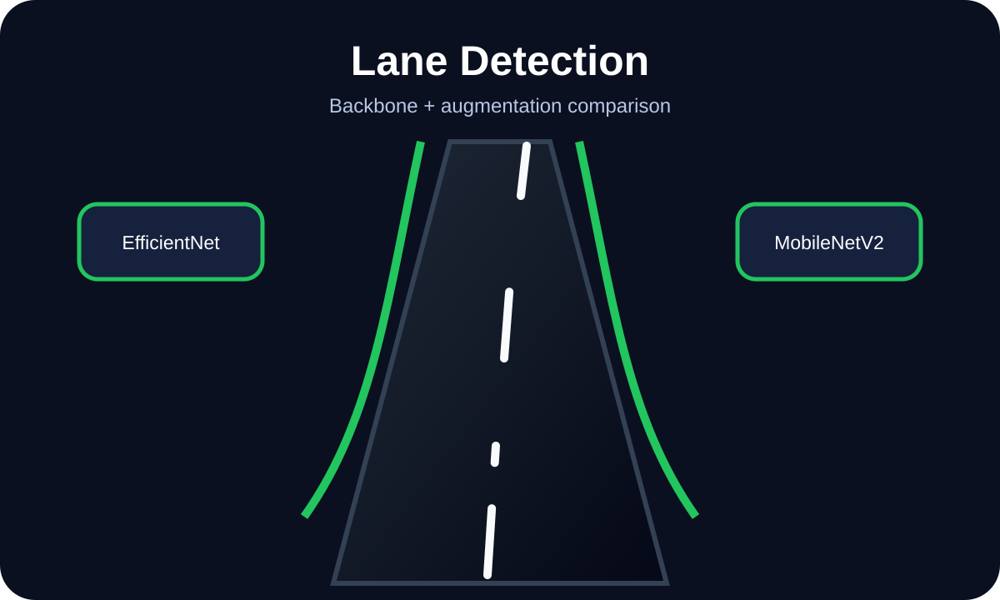

Computer Vision · Research · Deep Learning
Monocular Lane Detection: Why Simpler Backbones Sometimes Win

Danish Nadar
AI Engineer · CS 584 Machine Learning · Illinois Institute of Technology
EfficientNet looked better on paper than ResNet-18. It wasn't — at least not for this task. A backbone comparison study revealed that robustness isn't the same as parameter count.

Backbone comparison: ResNet-18 vs EfficientNet-B0 vs MobileNetV2 with augmentation study
The project: simplifying 3D lane detection into a feasible 2D problem
The original framing of this CS 584 project involved 3D lane detection — predicting lane coordinates in three-dimensional space from a monocular (single camera) image. That's an extremely hard problem: monocular depth estimation is an unsolved challenge even in production autonomous driving systems.
The decision I made early was to simplify the problem scope. Rather than chasing 3D reconstruction, I focused on 2D lane coordinate prediction — a more tractable version of the task that still evaluates the meaningful question: which backbone architecture is most robust to real-world variations in lighting, weather, and road conditions?
The simplification made the evaluation cleaner. With a well-defined 2D prediction target, I could compare architectures fairly — without confounding the results with 3D reconstruction error.
The backbones: ResNet-18, EfficientNet-B0, and MobileNetV2
ResNet-18 is the baseline — a well-understood architecture with skip connections that help with training stability. It's not the most parameter-efficient, but it's reliable and well-tested on vision tasks.
EfficientNet-B0 uses compound scaling — simultaneously increasing width, depth, and resolution rather than scaling one dimension at a time. On ImageNet benchmarks, EfficientNet-B0 outperforms ResNet-18 at a fraction of the parameter count. The expectation going in was that it would win.
MobileNetV2 is the efficiency-first option — designed for deployment on resource-constrained hardware. It uses depthwise separable convolutions and inverted residuals to minimize compute while maintaining reasonable accuracy.
Results: what the augmentation study revealed
The augmentation set tested robustness to realistic driving conditions: Gaussian blur (fog/rain simulation), random noise (sensor degradation), brightness shifts (time of day variation), and shadow simulation (overpass/tree conditions).
ResNet-18 showed the most consistent performance across augmentation conditions. Its F1-score degraded less than EfficientNet-B0 when augmentation was applied — suggesting that the compound scaling in EfficientNet creates a model that's more sensitive to distribution shift, not more robust to it.
The lesson: benchmark performance on clean data is not the same as robustness under realistic conditions. For lane detection specifically — where weather and lighting are constant variables, not edge cases — the more conservative backbone architecture won.
Stack
Python · PyTorch · torchvision · OpenCV · scikit-learn · matplotlib
Key finding
ResNet-18 outperformed EfficientNet-B0 under augmentation — benchmark accuracy on clean data doesn't predict robustness to distribution shift.